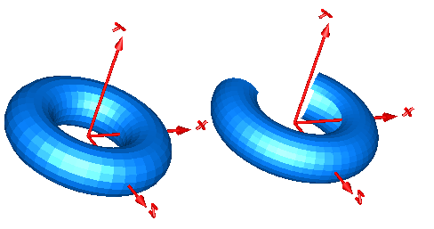

TorusVisualizing a torus |
Diagram
{kind=link}
Information
This information is part of the Modelica Standard Library maintained by the Modelica Association.
Model Torus visualizes a torus. The center of the torus is located at connector frame_a (visualized by the red coordinate system in the figure below). The left image below shows a torus with ri=0.5 m and ro = 0.2 m. The right images below shows the torus with the additional parameter settings:
opening = 45 degree startAngle = -135 degree stopAngle = 135 degree

In the advanced menu the discretization of the surface visualization can be defined by the number of points of the inner radius of the torus (n_ri) and by the number of points of the outer radius of the torus (n_ro). In case the torus is closed (that is, opening = 0 degree), the actual number of points is one less (that is n_ri-1, n_ro-1), because the first and the last point of the parametrization coincide in this case.
Parameters (9)
| animation |
Value: true Type: Boolean Description: = true, if animation shall be enabled |
|---|---|
| ri |
Value: 0.5 Type: Radius (m) Description: Inner radius of torus |
| ro |
Value: 0.1 Type: Radius (m) Description: Outer radius of torus (=width/2) |
| opening |
Value: 0 Type: Angle (rad) Description: Opening angle of torus |
| startAngle |
Value: -3.1415926535898 Type: Angle (rad) Description: Start angle of torus slice |
| stopAngle |
Value: 3.1415926535898 Type: Angle (rad) Description: End angle of torus slice |
| wireframe |
Value: false Type: Boolean Description: = true: 3D model will be displayed without faces |
| n_ri |
Value: 40 Type: Integer Description: Number of points along ri |
| n_ro |
Value: 20 Type: Integer Description: Number of points along ro |
Inputs (3)
| color |
Default Value: {0, 128, 255} Type: RealColor Description: Color of surface |
|---|---|
| specularCoefficient |
Default Value: 0.7 Type: SpecularCoefficient Description: Reflection of ambient light (= 0: light is completely absorbed) |
| transparency |
Default Value: 0 Type: Real Description: Transparency of shape: 0 (= opaque) ... 1 (= fully transparent) |
Connectors (1)
| frame_a |
Type: Frame_a Description: Coordinate system in which visualization data is resolved |
|---|
Components (2)
Used in Examples (1)
|
Modelica.Mechanics.MultiBody.Examples.Elementary Demonstrate the visualization of a sine surface, as well as a torus and a wheel constructed from a surface |